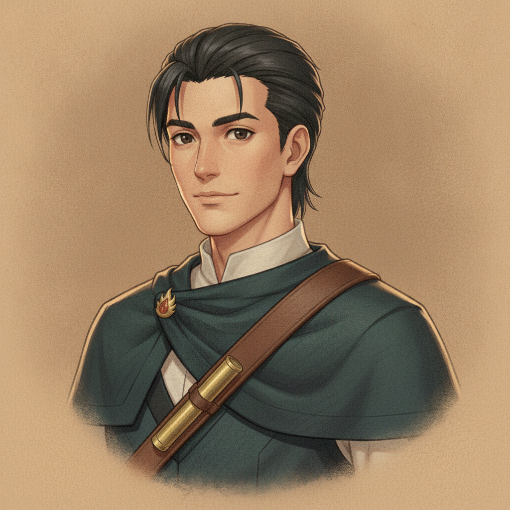
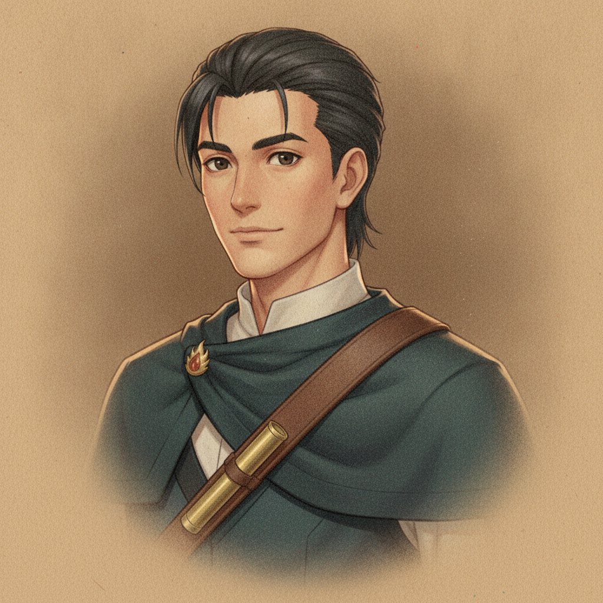
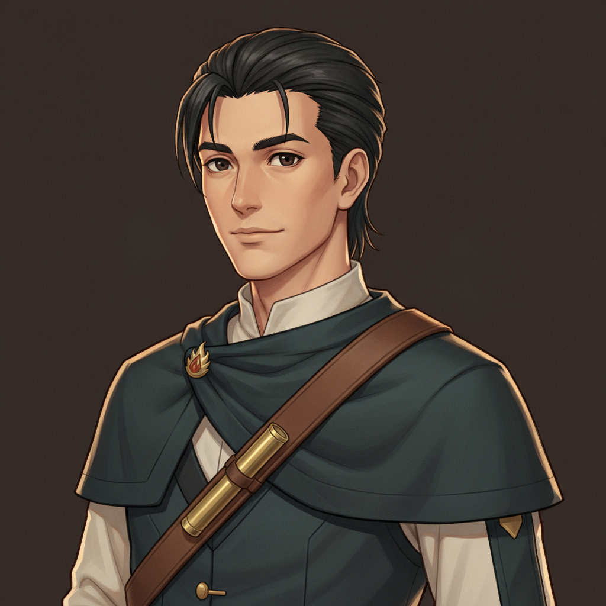

candidate 1

slightly crisper linework.
candidate 2

slightly softer, warmer paper grain.
June (for style match)

her in-game bust — the medium these must sit beside.
the key art (H2)

the chosen design these were redrawn from.